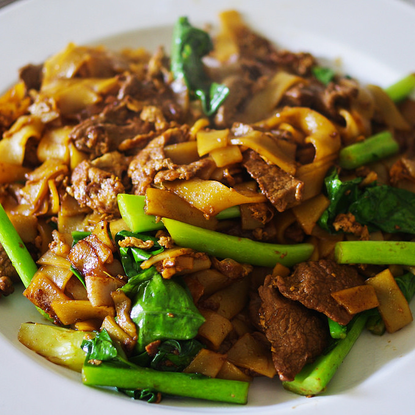

Pad See Ew

Description
Pad See Ew is one of my favorite Thai dishes.
It is fairly simple to make. Once prep is done,
it all comes together very quickly.
Ingredients
- 1/2 pack flat wide rice noodles
- 1/2 bunch Chinese broccoli
- 1 egg
- 1 clove garlic
- Canola oil
- Choice of protein
Sauce
- 1 tbs oyster sauce
- 1 tbs kecap manis
- 1 tbs dark soy sauce
- 1 tbs Golden Mountain sauce
Steps
- Combine the sauces in a small bowl.
- Heat up the oil in the wok and sauté the garlic until slightly brown at the edges.
Then add the beef and cook until the exposed sides of the meat are sealed.
- Move the meat to one side of the wok and crack an egg.
Scramble with you spatula.
- Add noodles and sauce, toss to combine.
- Add chinese broccoli and cook for 4-5 minutes or until greens are wilted.
- Plate and serve immediately.
Home